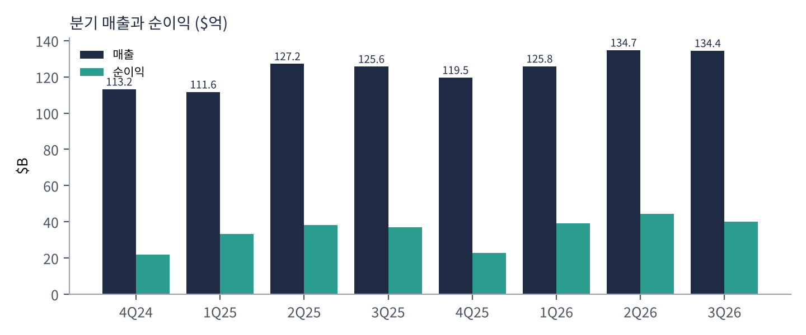
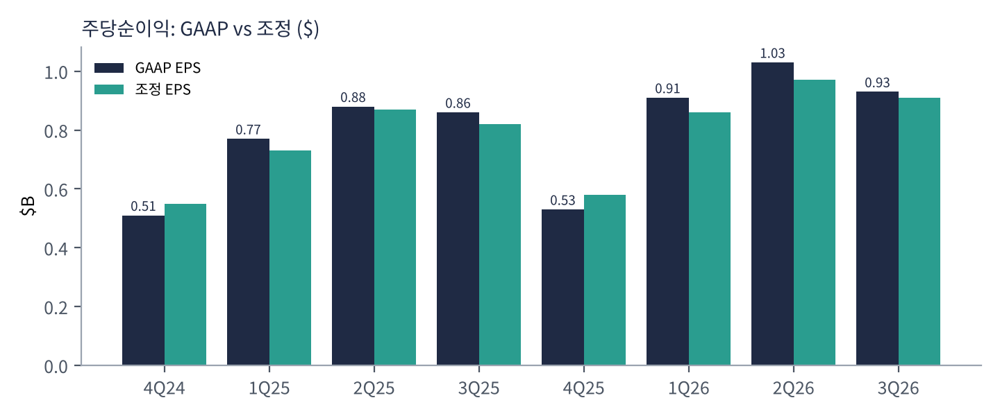
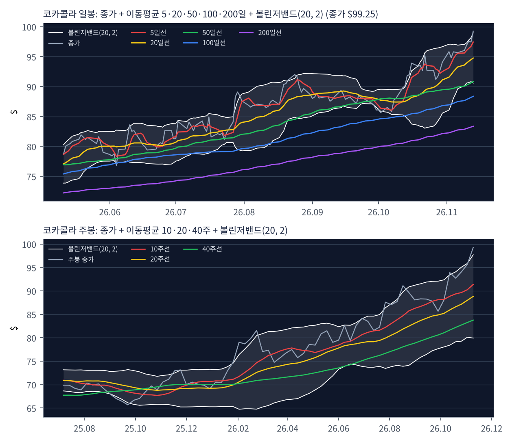
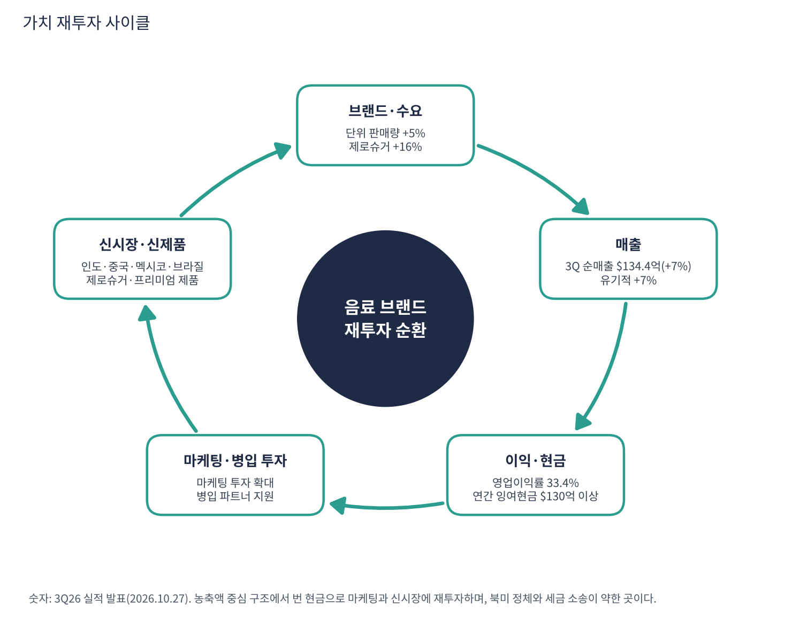

코카콜라는 코카콜라·스프라이트·파워에이드·스마트워터 등 음료 브랜드를 농축액과 완제품으로 200여 개 시장에 파는 회사다. 3분기에 판매량 +5%와 가이던스 상향이 있었지만, 북미 판매량이 정체이고 세금 소송이 남아 있으며 PER이 29배로 높은 회사다. 주가는 $99.25다.
| 항목 | 내용 |
|---|---|
| 종목 | The Coca-Cola Company (KO) · NYSE · 소비재(음료) · 조지아 애틀랜타 |
| 멀티플 | PER 29.3배 · PEG 2.34 · P/S 8.17배 (11/13 종가 $99.25) |
| 최근 분기(3Q26) | 순매출 $134.4억(+7%), 단위 판매량 +5%, 조정 EPS $0.91(+11%), 영업이익률 33.4% |
| 가이던스(2026) | 유기적 매출 +5% 이상, 조정 EPS +11% 이상(기존 9~10%), 잉여현금 $130억 이상, 세율 19.7% |
| 현금·부채 | 스캐너: 현금 $166.0억, 총차입금 $416.2억, TTM 잉여현금 $142.8억 |
| 직책 | 인물 | 역할·특징 |
|---|---|---|
| CEO | 헨리케 브라운(Henrique Braun) | 북미 가격 접근성(미니캔)과 프리미엄화로 판매량 안정화를 추진 |
| CFO | 존 머피(John Murphy) | 연간 가이던스를 세 분기 연속 상향 |
경영 스타일: '농축액 중심의 높은 마진을 지키며 마케팅 투자와 병입 파트너 구조로 성장한다'. 3분기 영업이익률이 33.4%(전년 32.0%)로 올랐고, 마케팅 투자와 운영비 증가를 매출 성장으로 흡수했다.
제로슈거 콜라 판매량이 +16%이고 인도·중국·멕시코·브라질이 판매량을 이끌었다(회사 발표).
물·커피·차·주스·유제품 음료로 범주를 넓혀 소비자 접점을 늘린다.
다음 실적발표(4Q26)는 세 가지 질문에 답하는 자리다.
질문 1. 연간 가이던스(유기적 매출 +5% 이상, 조정 EPS +11% 이상)를 채우는가?
| 확인할 숫자 | 좋아지면 | 나빠지면 |
|---|---|---|
| 3Q 유기적 매출 +7%, 연간 유기적 매출 +5% 이상, 조정 EPS 성장 +11% 이상, 잉여현금 $130억 이상(회사) | 채우면 ②매출·③현금 고리가 이어진다 | 미달이면 3분기 호조가 일시적이라는 뜻이다 |
질문 2. 북미 판매량이 정체에서 벗어나는가?
| 확인할 숫자 | 좋아지면 | 나빠지면 |
|---|---|---|
| 3Q 북미 판매량 0%(매출 $53.9억, +3%), 물·스포츠·커피·차 감소, 가격·믹스 +1% | 플러스로 돌아오면 ①수요 고리가 넓어진다 | 정체가 이어지면 성장이 해외에 더 몰린다 |
질문 3. 2027 가이던스와 세금 소송 일정이 나오는가?
| 확인할 숫자 | 좋아지면 | 나빠지면 |
|---|---|---|
| 2027 가이던스는 4Q 발표와 함께(트레이딩뷰 일정), 미국 국세청 이전가격 소송 항소심 판결은 6~12개월 내 예상(회사 설명), 추가 세금 가능액 약 $120~140억 | 낮은 위험으로 정리되면 ③현금 고리 부담이 줄어든다 | 패소 시 세율이 약 3.5%p 오른다(회사 추정) |
한 줄 판정 규칙: 첫 질문이 가이던스 안이고 북미 판매량이 플러스로 돌아서면 약한 고리가 풀리고, 세금 소송 결과가 나쁘면 현금 고리가 약해진다.
일정: 2027-02-16 예정(트레이딩뷰 일정, 회사 확정 확인 필요). 2027 연간 가이던스는 같은 발표에서 나온다.
| 분기 | 매출 | 순이익 | EPS | 조정 EPS | 특이 사항 |
|---|---|---|---|---|---|
| 4Q24 | $113.2억 | $21.9억 | 0.51 | 0.55 | |
| 1Q25 | $111.6억 | $33.3억 | 0.77 | 0.73 | |
| 2Q25 | $127.2억 | $38.1억 | 0.88 | 0.87 | |
| 3Q25 | $125.6억 | $37.0억 | 0.86 | 0.82 | |
| 4Q25 | $119.5억 | $22.7억 | 0.53 | 0.58 | |
| 1Q26 | $125.8억 | $39.2억 | 0.91 | 0.86 | |
| 2Q26 | $134.7억 | $44.2억 | 1.03 | 0.97 | |
| 3Q26 | $134.4억 | $40.1억 | 0.93 | 0.91 | 3Q26 매출 +7%, 조정 EPS +11% |


값은 트레이딩뷰 스캐너 분기 이력이다. 조정 EPS는 트레이딩뷰 Reported(회사 '비교 가능 EPS')이며 GAAP EPS와 항목이 달라 분기별 차이가 난다. 분기 설비투자는 구하지 못했다.
흐름 요약: 매출은 4Q24 $113.2억에서 3Q26 $134.4억으로 늘었고, 조정 EPS는 3Q26 $0.91로 전년 $0.82 대비 +11%다. 순이익은 일회성 항목(평가이익 등)으로 분기마다 변동이 크다(내 해석).
| 항목 | 값 | 비고 |
|---|---|---|
| 3Q 북미 | $53.9억 | 전년비 +3%, 판매량 0%, 유기적 +3% |
| 3Q 유럽·중동·아프리카 | $31.0억 | 전년비 +4%, 판매량 +5%, 유기적 +7% |
| 3Q 중남미 | $19.6억 | 전년비 +25%, 판매량 +6%, 유기적 +16% |
| 3Q 아시아태평양 | 약 $15.6억 | 전년비 +4%, 판매량 +6%, 유기적 +6% |
| 3Q 병입 투자·기타 | 약 $14.3억 | 합계에서 뺀 값(내 계산), 병입 투자 유기적 +12% |
성장은 중남미·유럽에서 나오고 북미는 판매량이 정체다. 농축액 판매는 판매량보다 2%p 앞섰고 선적 시점 영향이다(회사 설명). 브랜드·제품별 매출 표는 이번에 구하지 못했다.
코카콜라는 '전 세계 어디서나 사람들이 고르는 음료 브랜드 포트폴리오를 키우며 높은 마진과 현금을 유지하는 것'을 목표로 한다.
| 축 | 최근 움직임 |
|---|---|
| 수요 | 판매량 +5%, 제로슈거 +16%, 인도·중국·멕시코·브라질 주도 |
| 재무 | 조정 EPS +11% 이상, 잉여현금 $130억 이상, 영업이익률 33%대 |
| 위험 | 미국 국세청 소송, 북미 판매량 정체, 세금(멕시코 설탕세 등) |

| 이동평균 | 값 | 종가 대비 | 해석 |
|---|---|---|---|
| 5일선 | $97.44 | +1.9% | 현재가가 위 |
| 20일선 | $94.76 | +4.7% | 현재가가 위 |
| 50일선 | $90.82 | +9.3% | 현재가가 위 |
| 100일선 | $88.37 | +12.3% | 현재가가 위 |
| 200일선 | $83.35 | +19.1% | 현재가가 위 (+19%) |
주봉 흐름: 52주 고점 $99.30(11/13), 52주 저점 $67.27(1/7). 현재가 $99.25는 200일선 $83.35보다 위, 50일선 $90.82보다 위에 있다.
| 규칙 | 기준 | 현재 값 | 신호 |
|---|---|---|---|
| 장기 추세 필터 | 종가 vs 200일선 | $99.25 > $83.35 | 매수 |
| 중장기 교차 | 50일선 vs 200일선 | $90.82 > $83.35 | 매수 |
| 단기 교차 | 20일선 vs 50일선 | $94.76 > $90.82 | 매수 |
| 돈키언 채널 | 55일 고가 $99.30 / 저가 $85.13 | 중간값 $92.22 위 | 매수 |
| 1개월 모멘텀 | 21거래일 수익률 | +7.9% (기준 $92.00) | 매수 |
| 3개월 모멘텀 | 63거래일 수익률 | +14.1% (기준 $86.98) | 매수 |
| 6개월 모멘텀 | 126거래일 수익률 | +22.8% (기준 $80.82) | 매수 |
| 12개월 모멘텀 | 252거래일 수익률 | +38.8% (기준 $71.51) | 매수 |
| 종합 (8개 평균) | +1.00 | 강한 매수 |
해석: 8개 신호 중 매수 8개, 매도 0개(점수 +1.00, 강한 매수)다. 14일 ATR $1.88 (1.9%).
| 가격·조건 | 무엇이 바뀌나 | 의미 |
|---|---|---|
| $83.35 돌파 | 200일선 | 이탈하면 매수 → 매도 |
| 50일선이 200일선 위로 | 50/200 교차 | 이탈하면 매수 → 매도 |
| 20일선이 50일선 위로 | 20/50 교차 | 이탈하면 매수 → 매도 |
| 구분 | 가격대 | 근거 |
|---|---|---|
| 저항 1 | $99.30 | 55일 고점 |
| 저항 2 | $99.30 | 52주 고점 |
| 지지 1 | $97.44 | 5일선 |
| 지지 2 | $94.76 | 20일선 |
점수는 +1.00(강한 매수)다. 14일 ATR은 $1.88로 현재가의 1.9%다. 가까운 저항 $99.30을 종가로 넘는지와 가까운 지지 $97.44를 지키는지가 신호 전환의 기준이다. (내 가정, 매매 권유 아님)
| 악재 요인 | 내용 | 강도 |
|---|---|---|
| 세금 소송 | 미국 국세청 이전가격 소송(2007~09년 $60억 납부), 승소·패소에 따라 추가 약 $120~140억, 세율 약 3.5%p | 높음 |
| 북미 정체 | 3Q 북미 판매량 0%, 물·스포츠·커피·차 감소 | 중간 |
| 건강·규제 | 비만 치료제(GLP-1) 확산, 멕시코 설탕세 등 당류 과세 | 중간 |
| 환율·원가 | 중남미·신흥국 환율, 알루미늄 등 원가 | 중간 |
| 높은 PER | PER 29배, PEG 2.34로 성장 대비 가격이 높음 | 중간 |
| 티커 | 회사 | PER(TTM) | PEG | P/S | EPS 성장(YoY) |
|---|---|---|---|---|---|
| KO | 코카콜라 | 29.3배 | 2.34 | 8.17배 | +12% |
| PEP | 펩시코 | 18.3배 | 0.35 | 1.98배 | +51% |
| KDP | 큐리그 닥터페퍼 | 33.2배 | – | 2.09배 | -6% |
| MNST | 몬스터 비버리지 | 42.3배 | 1.65 | 9.41배 | +25% |
KO 첫 행은 스캐너 값이다. PEP의 EPS 성장 +51%는 전년 일회성 비용 기저 효과로 보인다(내 해석). KDP는 EPS가 감소해 PEG가 없다.
코카콜라는 현금 $166.0억, 총차입금 $416.2억이고 TTM 잉여현금이 $142.8억이다. 연간 잉여현금 가이던스는 $130억 이상이고, 총차입금이 현금보다 커 순차입이 약 $250.2억이다(내 계산).
| 지표 | 값 | 계산·출처 | 해석 |
|---|---|---|---|
| 현금 | $166.0억 | 스캐너 | 단기투자 포함 여부는 확인 필요 |
| 총차입금 | $416.2억 | 스캐너 | 순차입 약 $250.2억(내 계산) |
| TTM 잉여현금흐름 | $142.8억 | 스캐너 | TTM 매출 $514.5억 대비 약 27.8%(내 계산) |
| TTM 설비투자 | $19.5억 | 스캐너 | 매출 대비 약 3.8%(내 계산) |
| 기준 | 값 | 비고 |
|---|---|---|
| P/S (TTM) | 8.17배 | 스캐너 |
| 동종 | PEP 1.98, KDP 2.09, MNST 9.41 | 11/13 스캐너 |
해석: P/S 8.2배는 펩시코(2.0배)·KDP(2.1배)보다 훨씬 높고 몬스터(9.4배)와 비슷하다. 영업이익률이 32%대로 높아 매출 대비 가격이 높게 형성된 것으로 보인다(내 해석).
| 지표 | 값 | 판정 |
|---|---|---|
| PER (GAAP TTM) | 29.3배 | 스캐너, TTM EPS $3.39 |
| PER (조정 TTM) | 약 29.9배 | $99.25 ÷ 최근 4분기 조정 EPS $3.32(내 계산) |
| TTM EBITDA | $175.2억 | 스캐너, 매출 대비 약 34.1%(내 계산) |
| TTM 영업이익률 | 32.1% | 스캐너 |
| 방식 | PER | EPS 성장률 | PEG | 판정 |
|---|---|---|---|---|
| 트레이딩뷰 (GAAP TTM) | 29.3배 | +12.3% | 2.34 | GAAP EPS 기준 |
| 조정 EPS (내 계산) | 약 29.9배 | 약 +11.8% | 약 2.5 | 최근 4분기 $3.32 ÷ 직전 4분기 $2.97 |
판정: PEG 2.34(조정 기준 약 2.5)는 투자 적격 기준 1.0을 넘는다.이익이 두 자릿수로 성장하지만 PER이 29~30배라 PEG가 높다. 회사 가이던스(조정 EPS +11% 이상)로도 PEG는 약 2.7이다(내 계산).

코카콜라의 사이클은 브랜드·수요 → 매출 → 이익·현금 → 마케팅·병입 투자 → 신시장·신제품이다. 높은 마진으로 번 현금을 마케팅과 신시장에 다시 쓴다.
| 고리 | 현재 숫자 | 고리 강도 | 약해지는 신호 |
|---|---|---|---|
| ① 브랜드·수요 | 판매량 +5%, 제로슈거 +16% | 강함 | 북미 판매량 0% |
| ② 매출 | 3Q 순매출 $134.4억(+7%) | 강함 | 중남미 환율 효과가 큼(순매출 +25%, 유기적 +16%) |
| ③ 이익·현금 | 영업이익률 33.4%, 연간 잉여현금 $130억+ | 강함 | 세금 소송 위험 |
| ④ 마케팅·병입 투자 | 마케팅 투자·운영비 증가 | 보통 | 북미 가격 접근성(미니캔) 필요 |
| ⑤ 신시장·신제품 | 인도·중국·멕시코·브라질 성장 | 보통 | 유럽·중동·아프리카 가치 점유율 하락(프랑스·영국, 2025 3분기 기준) |
구조: ①②③은 강하지만 북미 판매량 정체와 미국 국세청 소송이 ③의 현금을 흔들 수 있다. 패소하면 추가 세금 $120~140억 가능성이 있다고 회사가 설명했다(내 해석: 잉여현금의 약 1년분 수준).